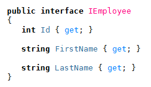
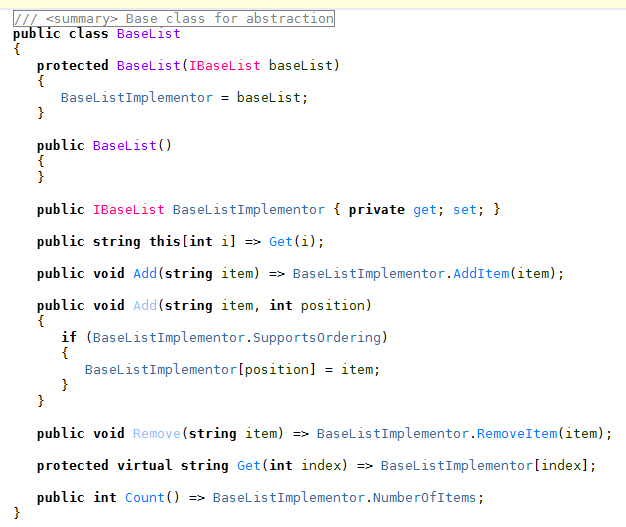
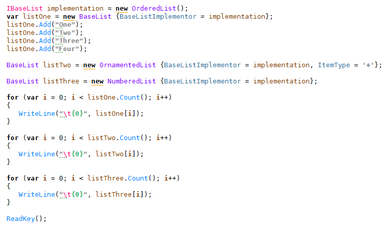
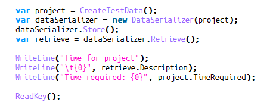

Structural patterns
- Adapter
- Bridge
- Composite
- Proxy
- Decorator
- Facade
- Flyweight
- Immutable object
The Adapter
Motivation
The Adapter pattern enables a system to use classes whose interfaces don’t quite match its requirements.
It is especially useful for off-the-shelf code, for toolkits, and for libraries.
Many examples of the Adapter pattern involve input/output because that is one domain that is constantly changing.
For example, programs written in the 1980s will have very different user interfaces from those written in the 2000s. Being able to adapt those parts of the system to new hardware facilities would be much more cost effective than rewriting them.
Toolkits also need adapters. Although they are designed for reuse, not all applica- tions will want to use the interfaces that toolkits provide; some might prefer to stick to a well-known, domain-specific interface. In such cases, the adapter can accept calls from the application and transform them into calls on toolkit methods.
The diagram

IEmployee

EmployeeImpl

ComparableEmployee

Adapter App

The Bridge
Role
The Bridge pattern decouples an abstraction from its implementation, enabling them to vary independently. The Bridge pattern is useful when a new version of software is brought out that will replace an existing version, but the older version must still run for its existing client base. The client code will not have to change, as it is conforming to a given abstraction, but the client will need to indicate which version it wants to use.
The diagram

IBaseList iface

BaseList impl

Numbered list

Ordered list

Ornamented list

Bridge App

Composite
Role
The Composite pattern arranges structured hierarchies so that single components and groups of components can be treated in the same way. Typical operations on the components include add, remove, display, find, and group.
The diagram

Contact interface

Contact Impl

Project item interface

Project Impl

Deliverable

Work task

Data serializer helper

Creating the contacts

Creating the project

Adding tasks, subtasks

Composite App
